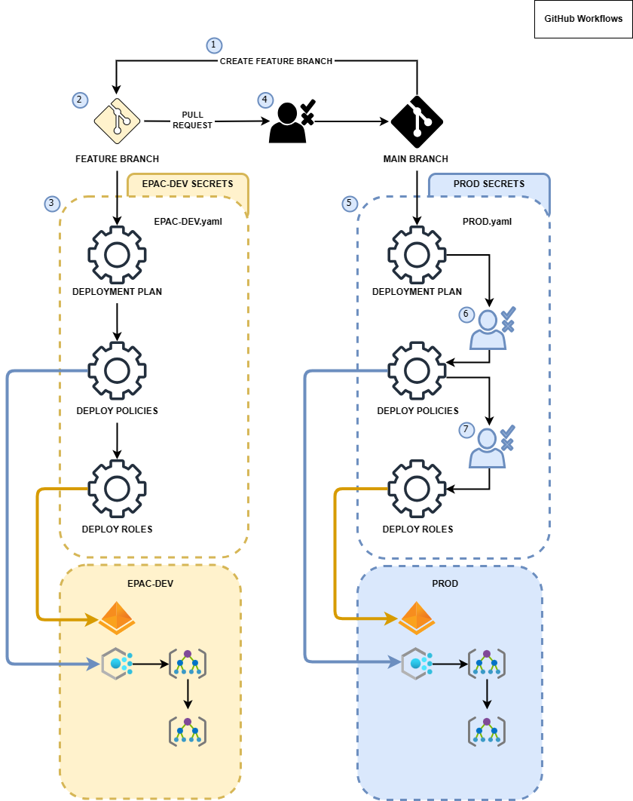

Using Enterprise Azure Policy as Code (EPAC)
In this blog post, we will show how to use Enterprise Azure Policy as Code (EPAC) to manage your Azure environment.
Use case
- Determine desired state strategy.
- We have some existing Azure Policies that we want to manage as code.
- For simplicity, we will suppose that we have a unique Centralized Team that manages the policies.
- We will use a Git repository to store the policies and the CI/CD process to deploy them.
- We doesn't have any exclude resources in the environment.
- How to handle Defender for Cloud Policy Assignments:
- We will use Defender for Cloud to manage the Policy Assignments for Defender Plans when a plan is enabled.
- EPAC will manage Defender for Cloud Security Policy Assignments at the management group level. This is the default behavior.
- Design your CI/CD process:
- We will use Release Flow
Management Groups for Enterprise Scale Landing Zone
This is the common structure for the Management Groups in the Enterprise Scale Landing Zone, now Accelerator Landing Zone:
graph TD
A[Root Management Group] --> B[Intermediary-Management-Group]
B --> C[Decommissioned]
B --> D[Landing Zones]
B --> E[Platform]
B --> F[Sandboxes]
D --> G[Corp]
D --> H[Online]
E --> I[Connectivity]
E --> J[Identity]
E --> K[Management]
For this use case, we will use the Landing Zones Management Group for duplicate and old Management Group hierarchy (manage-azure-policy):
graph TD
A[Root Management Group] --> B[epac-dev]
B --> C[dev-decommissioned]
B --> D[dev-landingzones]
B --> E[dev-platform]
B --> F[dev-sandbox]
D --> G[dev-corp]
D --> H[dev-online]
E --> I[dev-connectivity]
E --> J[dev-identity]
E --> K[dev-management]
A[Root Management Group] --> L[epac-prod]
L --> M[prod-decommissioned]
L --> N[prod-landingzones]
L --> O[prod-platform]
L --> P[prod-sandbox]
N --> Q[prod-corp]
N --> R[prod-online]
O --> S[prod-connectivity]
O --> T[prod-identity]
O --> U[prod-management]
A[Root Management Group] --> V[manage-azure-policy]
classDef dev fill:#f90,stroke:#333,stroke-width:2px;
classDef prod fill:#f9f,stroke:#333,stroke-width:2px;
class dev A,B,C,D,E,F,G,H,I,J,K;
class prod L,M,N,O,P,Q,R,S,T,U;
Note
You could also use two different tenants for the different environments, but this is not the case for this use case.
You can create this Management Groups hierarcly using the Azure CLI with the following commands:
az account management-group create --name "MyManagementGroup"
az account management-group move --name "ChildGroup" --new-parent "NewParentGroup"
For the use case, we will use the following commands:
az account management-group create --name "epac-dev"
az account management-group create --name "dev-decommissioned" --parent "epac-dev"
az account management-group create --name "dev-landingzones" --parent "epac-dev"
az account management-group create --name "dev-platform" --parent "epac-dev"
az account management-group create --name "dev-sandbox" --parent "dev-landingzones"
az account management-group create --name "dev-corp" --parent "dev-landingzones"
az account management-group create --name "dev-online" --parent "dev-landingzones"
az account management-group create --name "dev-connectivity" --parent "dev-platform"
az account management-group create --name "dev-identity" --parent "dev-platform"
az account management-group create --name "dev-management" --parent "dev-platform"
az account management-group create --name "epac-prod"
az account management-group create --name "prod-decommissioned" --parent "epac-prod"
az account management-group create --name "prod-landingzones" --parent "epac-prod"
az account management-group create --name "prod-platform" --parent "epac-prod"
az account management-group create --name "prod-sandbox" --parent "prod-landingzones"
az account management-group create --name "prod-corp" --parent "prod-landingzones"
az account management-group create --name "prod-online" --parent "prod-landingzones"
az account management-group create --name "prod-connectivity" --parent "prod-platform"
az account management-group create --name "prod-identity" --parent "prod-platform"
az account management-group create --name "prod-management" --parent "prod-platform"
Installation
To install EPAC, follow these steps:
Create an empty repository in github and clone it
Create a repository in github and clone it
Create a branch for the feature/firstcommit
Note
From this moment on, we will execute all commands within the repository directory.
Create Definitions
This command creates a folder structure for the definitions. The Definitions folder Structure is as follows:
- Define the Azure environment(s) in file
global-settings.jsonc - Create custom Policies (optional) in folder
policyDefinitions - Create custom Policy Sets (optional) in folder
policySetDefinitions - efine the Policy Assignments in folder
policyAssignments - Define the Policy Exemptions (optional) in folder
policyExemptions - Define Documentation in folder
policyDocumentations]
Configure global-settings.jsonc
global-settings.jsonc is the file where you define the Azure environment(s) that you want to manage with EPAC. The file should be located in the Definitions folder. Here is an example of the content of the file:
{
"$schema": "https://raw.githubusercontent.com/Azure/enterprise-azure-policy-as-code/main/Schemas/global-settings-schema.json",
"pacOwnerId": "ff2ce5e1-da8a-4cfb-883b-aee9fbfb85d6",
"pacEnvironments": [
{
"pacSelector": "epac-dev",
"cloud": "AzureCloud",
"tenantId": "e18e4e7e-d0cc-40af-9907-84923ca55499",
"deploymentRootScope": "/providers/Microsoft.Management/managementGroups/epac-dev",
"desiredState": {
"strategy": "full",
"keepDfcSecurityAssignments": false
},
"managedIdentityLocation": "france"
},
{
"pacSelector": "tenant",
"cloud": "AzureCloud",
"tenantId": "e18e4e7e-d0cc-40af-9907-84923ca55499",
"deploymentRootScope": "/providers/Microsoft.Management/managementGroups/epac-prod",
"desiredState": {
"strategy": "full",
"keepDfcSecurityAssignments": false
},
"managedIdentityLocation": "france",
"globalNotScopes": [
"/providers/Microsoft.Management/managementGroups/mg-Epac-Dev",
"/providers/Microsoft.Management/managementGroups/manage-azure-policy"
]
},
{
"pacSelector": "manage-azure-policy",
"cloud": "AzureCloud",
"tenantId": "e18e4e7e-d0cc-40af-9907-84923ca55499",
"deploymentRootScope": "/providers/Microsoft.Management/managementGroups/manage-azure-policy",
"desiredState": {
"strategy": "full",
"keepDfcSecurityAssignments": false
},
"managedIdentityLocation": "france"
}
]
}
Info
The pacOwner helps to identify who or what owns an Assignment or Policy definition deployment and needs to be unique to your EPAC environment. The pacOwnerId is used to identity policy resources that are deployed by your EPAC repository, or another EPAC isntance, legacy or another solution entirely.
You can generate a new id with New-Guid
Extracting existing Policy Resources
This command extracts all existing Policy Resources in the Azure environment(s) defined in the global-settings.jsonc file. The extracted resources are saved in the Output/Definitions folder.
You needs review the extracted resources and move them to the correct folder in the Definitions folder.
Syncing ALZ Definitions
Sync-ALZPolicies -DefinitionsRootFolder .\Definitions -CloudEnvironment AzureCloud # Also accepts AzureUSGovernment or AzureChinaCloud
You can sync the ALZ Definitions manually or use a GitHub action creating .github\workflows\alz-sync.yaml in your repository with the following content:
name: Sync ALZ Policy Objects
env:
REVIEWER: anwather # Change this to your GitHub username
DefinitionsRootFolder: Definitions # Change this to the folder where your policy definitions are stored
on:
workflow_dispatch
jobs:
sync:
runs-on: ubuntu-latest
steps:
- name: Checkout
uses: actions/checkout@v4
- shell: pwsh
name: Install Required Modules
run: |
Install-Module EnterprisePolicyAsCode -Force
Sync-ALZPolicies -DefinitionsRootFolder $env:DefinitionsRootFolder
$branchName = "caf-sync-$(Get-Date -Format yyyy-MM-dd-HH-mm)"
git config user.name "GitHub Actions Bot"
git config user.email "<>"
git checkout -b $branchName
git add .
git commit -m "Updated ALZ policy objects"
git push --set-upstream origin $branchName
gh pr create -B main -H $branchName --title "Verify Synced Policies - $branchName" -b "Checkout this PR branch and validate changes before merging." --reviewer $env:REVIEWER
env:
GITHUB_TOKEN: ${{ secrets.GITHUB_TOKEN }}
CI/CD with Github Flow
We will use the Github Flow to manage the CI/CD process. We will create a Github Actions to deploy the policies to the Azure environment(s) defined in the global-settings.jsonc file.

We can open a second terminal and execute the following command to create the Github Actions in one upper level folder of our repository. This command will create the Github Actions in the .github\workflows folder of the repository. :
git clone https://github.com/Azure/enterprise-azure-policy-as-code
cd enterprise-azure-policy-as-code
New-PipelinesFromStarterKit -StarterKitFolder .\StarterKit -PipelinesFolder ..\global-azure-2024-demo-EPAC\.github\workflows -PipelineType GitHubActions -BranchingFlow github -ScriptType Module
Now, we need to create some environments with secrets in the repository to use in the Github Actions. We need to create the following environments:
| Environment | Purpose | App Registration (SPN) |
|---|---|---|
| EPAC-DEV | Plan and deploy to epac-dev |
ci-cd-epac-dev-owner |
| TENANT-PLAN | Build deployment plan for tenant |
ci-cd-root-policy-reader |
| TENANT-DEPLOY-POLICY | Deploy Policy resources for tenant |
ci-cd-root-policy-contributor |
| TENANT-DEPLOY-ROLES | Deploy Roles for tenant |
ci-cd-root-user-assignments |
| TENANT-REMEDIATE-POLICY | Remediate Policy resources for tenant |
ci-cd-root-policy-contributor |
You need to Configure a federated identity credential on an app too.
First Commit
Now we can commit the changes to the repository and make a pull request to the main branch.